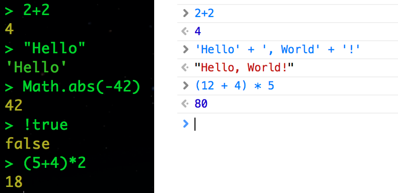
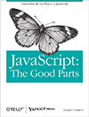
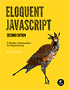

Типы данных
В JavaScript семь примитивных типов данных: числа (Number), большие целые числа (BigInt, с ES2020), текстовые строки (String), булевый тип (Boolean), символы (Symbol, с ES2015) и два служебных значения —
undefined и null. Всё остальное — объекты (Object): массивы, функции, регулярные выражения, даты и т. д.Классификация всех типов
данных в JavaScript
примитивные / простые
NumberBigIntString
BooleanSymbol
примитивные служебные
NullUndefined
объекты (Object)
ObjectArrayFunction
RegExpDateMapSet
Примеры чисел
0, -20, 42, 15000000, 15_000_000 (integer)
0xff (hex), 0o377 (octal), 0b1010 (binary)
3.14, -2345.789, .333333
6.02e23, 1.4738223E-32
NaN, Infinity, -Infinity
42n, 9007199254740993n (BigInt)
Данные в чистом виде называются литералами (от слова literal, «буквальный»). Литерал — это буквальное значение (value).
Примеры текстовых строк
'', "", 'name="myform"', "3.14"
"π is the ratio of a circle's…"
"This string\nhas two lines"
'You\'re right, it can\'t be a quote'
`2 + 2 = ${2 + 2}` (шаблонная строка)
\n, \t, \", \', \\, \u, \u{1F600}
Самый простой способ поработать с выражениями — это воспользоваться консолью (через терминал или браузер).

Подборка ссылок и глав из книг, с простыми объяснениями на тему типов данных, литералов, выражений и т. д.
Chapter 3. Types,
Values and Variables
JavaScript: The Definitive Guide

Chapter 2.
Grammar
JavaScript: The Good Parts
